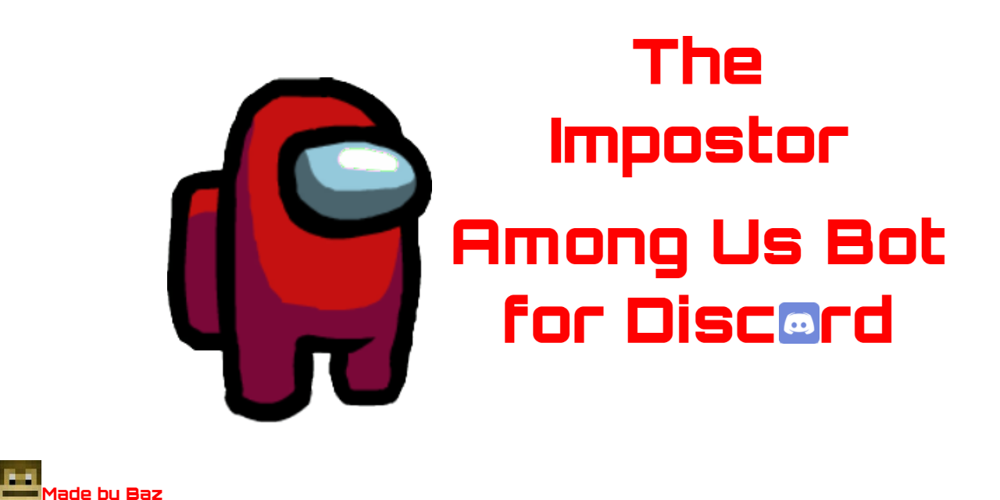

Support Server:

You can vote for us here:

Or here!
You can visit our GitHub Repo here!

You can submit a feedback form here!
Bot Version: 1.6.8
1.6.9 Release: N/A

What is it?
The Impostor is a bot made to use some Among Us themed commands on Discord!
Current commands:
Use the prefix "$" or "@The Impostor"
You can also use $help for help
info - sends some useful links for the bot
vote - vote for the bot!
version - reports back the current version of the bot
servers - returns the amount of servers the bot is in
creator - gives a bit of info about the creator
feedback - get a link to a feedback form
ping - get back your current latency
eject {user} {role} - eject the person you provide!
sus - that is very sus
kill {username} - die potatoes!
scan - prove you are not the impostor
download - download data and complete your tasks!
weather - go to Mira HQ and get the current weather!
inspect - inspect the medbay sample!
vent - who knows where you'll end up!
sabotage - sabotage one of the systems to guarantee an impostor victory!
reboot - reboot the wifi to play amog us
shower - clean off all that dirt!
swipe - swipe the admin card!
launch {doorlogs} - see what you can find on the systems
report - where on earth did you find that dead body?
The Impostor is a bot that will continuously recieve updates!